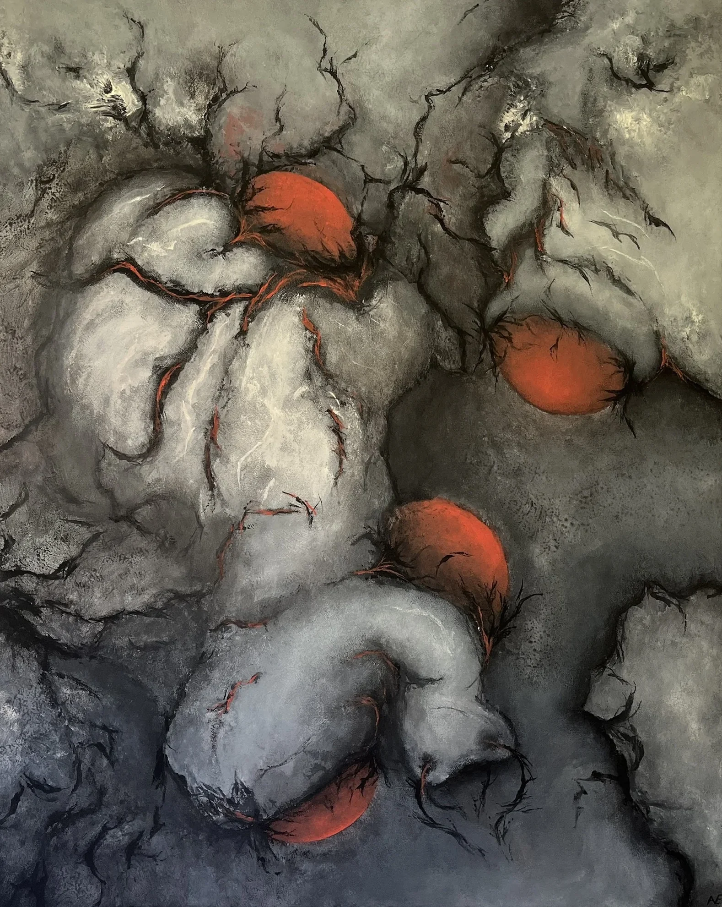

Elements of style · I
Flow and movement
- Ribbons, currents and long dragged strokes
- The eye is carried across the canvas and rarely allowed to settle
- Even still forms seem caught in the middle of a turn
- Direction first, shape second
Acrylic paintings · 2023–2026
A Collection of Experiments
289 paintings, from quick studies on A5 paper to 80 × 100 cm canvases. Flowing forms, order sliding into disorder, and surfaces that seem to grow.

This collection follows a journey through scale. It began small and fast, on A5 paper and 25 × 25 cm panels in 2023, and grew step by step onto larger canvases, up to the 80 × 100 cm works of 2026: more space, more room for breathing.
Highlights
The collection
Acrylic on paper and panel, 2023–2024 · 108 works
Acrylic on canvas, 2024 · 44 works
Acrylic on canvas, 2024 · 34 works
Acrylic on canvas, 2025–2026 · 41 works
Acrylic on canvas, 2024–2025 · 30 works
Acrylic on canvas, 2026 · 23 works
Acrylic on canvas, 2025 · 6 works
Acrylic on canvas, 2026 · 3 works
Elements of style · I
Elements of style · II
Elements of style · III
Collect
Open any work and tap Buy to order it from the shop, or Enquire to ask about it first: a detail, a price, or seeing it in person.
Shipped from Germany within 7 days, carefully packed.